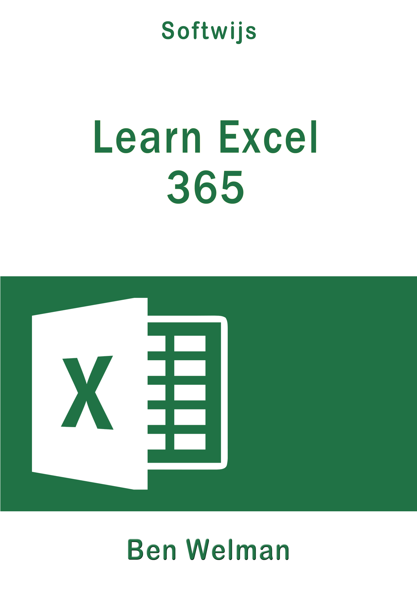

Preface
In this textbook, you will learn you to work with Excel 365, a constantly evolving product, with new features arriving as each new version is released. One important feature is the introduction of Dynamic Arrays and Dynamic Array functions in the July 2020 release. This has ensured that Excel 365 differs from other Excel versions, including the 2016 and 2019 releases. Dynamic arrays are incompatible with all other Excel versions.
Does this mean that you can't use this textbook with Excel 2016 and 2019? No, only the array chapter is not suitable, but all other chapters don't give problems.
- students in the middle and higher education.
- business people using Excel
The book is different from other Excel textbooks in several ways.
- It is free and online, making it accessible to a wide audience.
- The online version is regularly updated. You don’t have to wait until the next edition for errors to be removed or new topics (espicially for data analysis) are added.
- Topics are developed to perform a specific task and master a specific task, no more and no less. This has resulted in concrete stepwise tasks without additional information that may cause only distraction. Each task has a title that starts with the word Task: so that it is clear that something has to be carried out.
- At the end of most chapters there is a series of exercises. The title of an exercise always starts with the word Exercise: followed by a unique code and a short description. If the exercise has a final answer than it appears.
- The content of the tasks and exercises is mainly determined by competences and skills that higher education requires. Many of the problems have come from experiences of students in the professional practice during internships and graduation.
- PDF: suitable for reading on a PC / laptop and for making a paper print. The content is searchable and can be zoomed.
- EPUB: suitable for reading on a PC / laptop, e-reader, iPad, tablet. Font and font size can be adjusted (depending on the device). The content is searchable.
For purchasing a PDF and EPUB click on: .